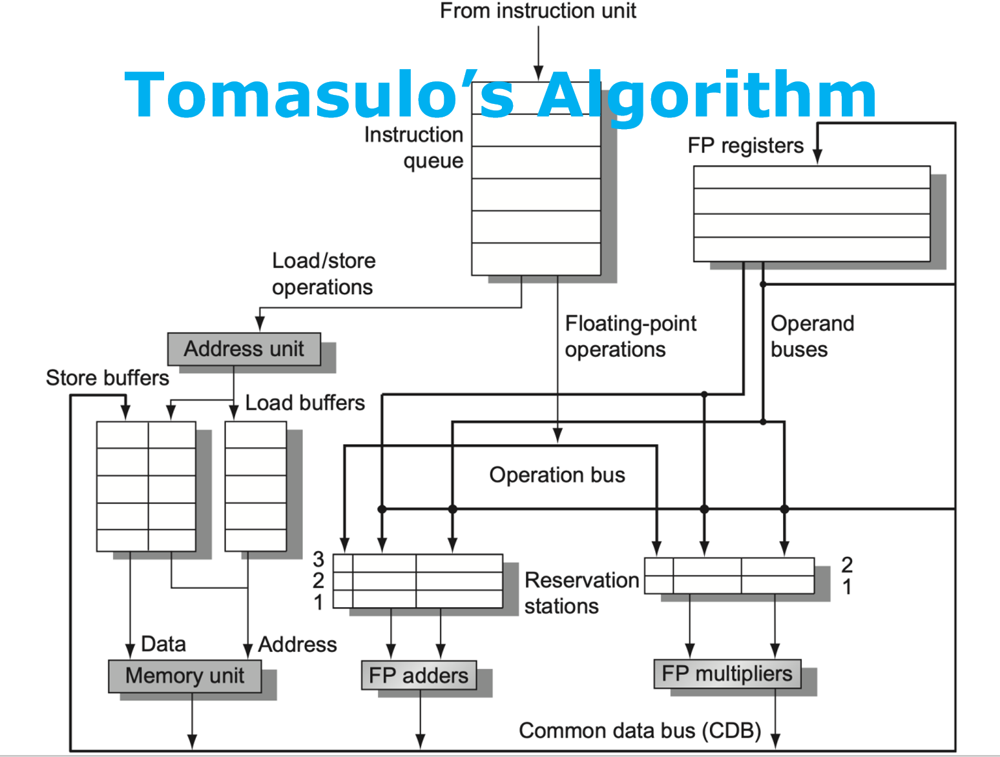
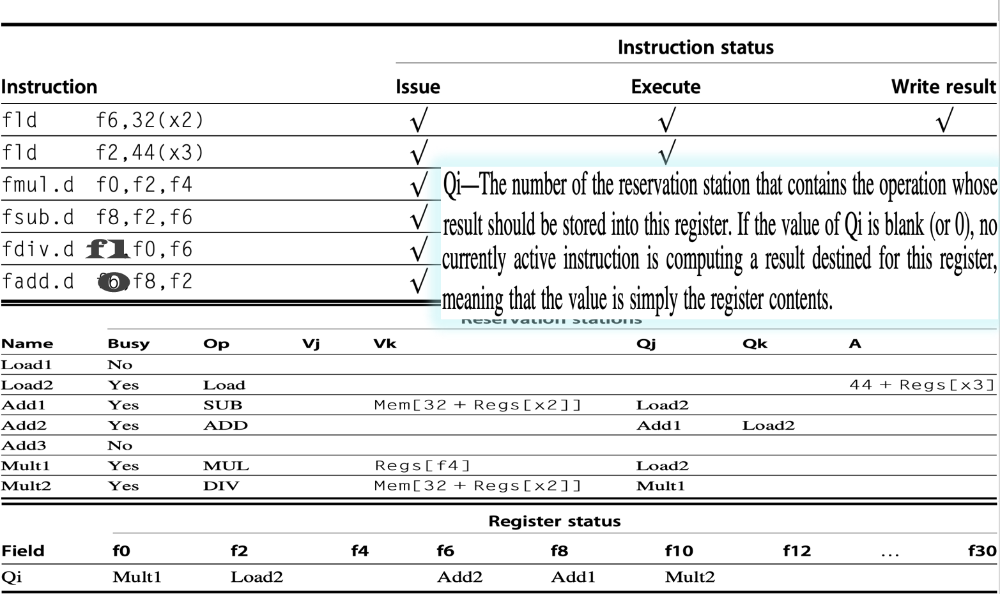

计算机体系结构3-1-3:Tomasulo 算法
第三节：Tomasulo 算法
Tomasulo 算法由 Robert Tomasulo 于 1967 年为 IBM System/360 Model 91 的浮点运算单元设计。它不仅仅是记分牌的优化，更是一场设计哲学上的革命。如果说记分牌是“集中管控下的有限自由”，那么 Tomasulo 算法就是“基于规则的分布式自治”。
3.1 核心设计哲学：从“等待”到“绕行”
Tomasulo 算法的精髓在于它解决了记分牌最棘手的三个问题，其设计哲学可以概括为以下三点：
-
控制逻辑的去中心化（Decentralization）：记分牌的“大脑”被分解了。危险检测和指令控制的逻辑不再集中于一处，而是分布到各个**保留站（Reservation Stations）**中。每个保留站就像一个独立的“调度员”，自己负责监控所需的操作数，一旦就绪就申请执行。这大大提高了系统的可扩展性。
-
通过寄存器重命名消除伪相关（Eliminating Name Dependencies via Register Renaming）：这是 Tomasulo 算法最核心、最天才的贡献。它深刻地洞察到，WAW 和 WAR 相关的本质，是多条指令在不同时间点上对同一个寄存器名字的争用，而非对数据值的依赖。Tomasulo 的解决方案是：在硬件中动态地为指令结果分配临时的“存储空间”（即保留站条目），从而将指令与固定的架构寄存器名解耦。
-
通过公共数据总线实现高效数据广播（Data-Flow via Common Data Bus, CDB）：为了配合分布式控制和寄存器重命名，Tomasulo 引入了公共数据总线（CDB）。一旦某个功能单元计算出结果，它不会悄悄地写回寄存器，而是将结果连同一个“标签”（Tag）一起广播到 CDB 上。所有正在等待这个结果的单元（包括保留站和寄存器堆）都会“收听”这个广播，并取走自己需要的数据。这形成了一个真正意义上的**数据驱动执行（Data-Flow Execution）**模型：数据的产生直接触发后续的计算。
3.2 Tomasulo 的体系结构：新组件与新角色
为了实现上述哲学，Tomasulo 引入了一套新的硬件结构。

让我们来认识一下图中的关键角色：
-
指令队列 (Instruction Queue)：从取指单元接收指令，按程序顺序（in-order）将它们送往发射逻辑。
-
保留站 (Reservation Stations, RS)：这是 Tomasulo 的心脏。它取代了记分牌中 FU 状态表的大部分功能。
- 功能：这是一个分布式的缓冲池，用于暂存已被发射但尚未执行的指令。每个保留站都与一个或一类功能单元（如加法器、乘法器）关联。
- 关键字段：
Op：要执行的操作。Qj,Qk：源操作数的“状态”。如果操作数还未就绪，这里存放的是将要产生该操作数的保留站的标签（Tag）。如果已经就绪，则为空。Vj,Vk：源操作数的“值”。如果操作数已经就绪，这里存放的是它的实际数值。Busy：表示该保留站是否被占用。
- 设计洞察：
Q和V字段的配合是关键。一个操作数要么有V（值），要么有Q（等待标签）。这种设计清晰地描绘了数据依赖链。
-
加载/存储缓冲 (Load/Store Buffers)：由于访存操作分为地址计算和实际访存两步，且需要与内存系统交互，Tomasulo 为它们设置了专门的缓冲。加载缓冲用于跟踪正在进行的加载操作，存储缓冲用于暂存存储操作的地址和数据，直到可以安全地写入内存。
-
公共数据总线 (Common Data Bus, CDB)：这是一条连接所有功能单元、保留站、加载/存储缓冲以及寄存器堆的广播总线。它是系统中已完成计算结果的唯一分发渠道。
-
浮点寄存器堆 (FP Registers)：寄存器堆的角色发生了根本性变化。除了存储已经“退休”（committed）的稳定值之外，它还增加了一个关键状态字段：
Qi：如果该寄存器是某条尚未完成指令的目标，Qi字段将保存正在为它计算结果的那个保留站的标签。如果寄存器中的值是有效的、最新的，则Qi字段为空。- 设计洞察：
Qi字段是实现寄存器重命名的核心机制！它建立了一个从架构寄存器名（如 F6）到物理存储位置/生产者标签（如Add1）的动态映射。
3.3 寄存器重命名：Tomasulo 的“神来之笔”
在深入算法流程之前，我们必须彻底理解寄存器重命名是如何从根本上解决伪相关的。
让我们回顾一下这个存在 WAR 和 WAW 相关的例子：
1. DIV.D F0, F2, F4
2. ADD.D F6, F0, F8 // RAW on F0
3. SUB.D F8, F10, F14 // WAR on F8 (被 ADD.D 读取)
4. MUL.D F6, F10, F8 // WAW on F6 (被 ADD.D 写入) & RAW on F8 (被 SUB.D 写入)
在记分牌中：
- 指令 4 (
MUL.D) 尝试发射时，会因为指令 2 (ADD.D) 也要写 F6 而导致 WAW 停顿。 - 指令 3 (
SUB.D) 完成执行后，如果指令 2 (ADD.D) 还没读取 F8 的旧值，会导致 WAR 停顿。
在 Tomasulo 中，这一切都改变了：
-
指令 2 (
ADD.D) 发射：- 假设它被分配到保留站
Add1。 - 系统在寄存器状态表中记录：
RegisterStat[F6].Qi = Add1。这相当于说：“从现在起，‘F6’这个名字的最新版本将由Add1产生。”
- 假设它被分配到保留站
-
指令 3 (
SUB.D) 发射：- 假设它被分配到
Add2。 - 系统记录：
RegisterStat[F8].Qi = Add2。 - 这条指令需要
F10和F14的旧值。假设它们是就绪的，SUB.D会直接从寄存器堆拷贝这两个值到Add2的Vj,Vk字段。 - WAR 消除：由于
SUB.D已经拿到了它需要的所有值（或者等待值的标签），它和指令 2ADD.D之间对 F8 的 WAR 关系就此了结。ADD.D之后可以随时写回 F8，完全不会影响到SUB.D。
- 假设它被分配到
-
指令 4 (
MUL.D) 发射：- 假设它被分配到
Mult1。 - 系统覆盖寄存器状态表：
RegisterStat[F6].Qi = Mult1。这相当于一次“重命名”：“哦，最新的‘F6’版本现在要由Mult1产生了，之前那个Add1的版本已经是‘旧闻’了。” - WAW 消除：
MUL.D和ADD.D不再争抢同一个物理目标。ADD.D的结果会写到等待Add1标签的单元，MUL.D的结果会写到等待Mult1标签的单元。它们各自有了自己的临时“家”。 - 对于源操作数
F8，MUL.D查询寄存器状态表，发现RegisterStat[F8].Qi = Add2，于是它知道自己需要等待Add2在 CDB 上广播结果。
- 假设它被分配到
通过这种方式，所有伪相关都被转换成了对不同临时存储位置（保留站）的数据流依赖，从而被彻底消除。
3.4 Tomasulo 算法流程：
现在，我们可以完整地描述 Tomasulo 算法的三个核心阶段了。
-
Issue (发射阶段)
- 条件：从指令队列头部取指令，检查是否有对应类型的空闲保留站（结构相关）。如果没有，则停顿。
- 动作：
a. 将指令信息（操作类型等）填入空闲的保留站。
b. 查找源操作数：对于每个源寄存器（如
rs,rt），查询寄存器结果状态表： * 如果Qi字段为空：说明操作数在寄存器堆中是有效的。直接将该值从寄存器堆复制到保留站的Vj/Vk字段。 * 如果Qi字段不为空：说明操作数正在由另一个保留站计算。将Qi字段中的标签复制到当前保留站的Qj/Qk字段。 c. 更新目标寄存器状态（寄存器重命名）：将目标寄存器rd在寄存器结果状态表中的Qi字段，设置为当前保留站的标签。 d. 将保留站的Busy位置为Yes。
-
Execute (执行阶段)
- 条件：保留站中的指令可以开始执行的唯一条件是：它的
Qj和Qk字段都为空（意味着它在Vj和Vk字段中拥有了全部的源操作数值）。 - 动作：功能单元执行计算。对于访存指令，此阶段是计算有效地址。
- 设计洞察：这是一个纯粹的、分布式的数据驱动过程。没有任何中央控制。哪个保留站的数据齐了，哪个就执行。
- 条件：保留站中的指令可以开始执行的唯一条件是：它的
-
Write Result (写回/广播阶段)
- 条件：功能单元完成计算。
- 动作：
a. 将计算结果和产生该结果的保留站标签一起放到 CDB 上进行广播。
b. 所有硬件单元“收听”CDB：
* 寄存器结果状态表：检查是否有寄存器的
Qi字段与 CDB 上的标签匹配。如果有，将 CDB 上的结果写入该寄存器，并清空Qi字段（表示该寄存器的值现在是稳定、有效的了）。 * 所有保留站：检查自己的Qj和Qk字段是否与 CDB 上的标签匹配。如果有，将 CDB 上的结果存入对应的Vj/Vk字段，并清空Qj/Qk字段。 c. 完成广播后，释放产生结果的那个保留站（将其Busy位清零）。
3.5 实例详解：Tomasulo 的动态追踪
让我们再次回到那个熟悉的指令序列，用 Tomasulo 的方式来分析如下的快照。
fld f6, 32(x2)
fld f2, 44(x3)
fmul.d f0, f2, f4
fsub.d f8, f2, f6
fdiv.d f0, f0, f6
fadd.d f6, f8, f2

快照时刻设定：第一条 fld f6 已完成并写回，第二条 fld f2 已完成执行但其结果还在 CDB 上广播的路上。
Reservation Stations 状态分析：
Load1和Load2：已经完成任务，状态为空闲（Busy=No）。Add1(fsub.d f8,f2,f6)：Op=SUB。Vj等待 F2，Vk等待 F6。Qj = Load2：明确表示它在等待Load2的结果。Qk为空，Vk = Mem[32+Regs[x2]]：因为第一条fld已经写回，F6 的值是就绪的，并且在fsub.d发射时被直接从寄存器堆拷贝过来了。
Add2(fadd.d f6,f8,f2)：Op=ADD。Qj = Add1：它在等待fsub.d的结果 F8，而fsub.d正在Add1中。Qk = Load2：它也在等待fld f2的结果 F2。
Mult1(fmul.d f0,f2,f4)：Op=MUL。Qj = Load2：等待 F2。Vk = Regs[f4]：F4 是就绪的。
Mult2(fdiv.d f0,f0,f6)：Op=DIV。Qj = Mult1：它在等待fmul.d的结果 F0。Vk = Mem[32+Regs[x2]]：等待 F6 的值。
Register Status (Qi) 状态分析：
F0 -> Mult2：F0 的最终值将由Mult2(即fdiv.d) 产生。注意，fmul.d也要写 F0，但在fdiv.d发射时，这个映射就被覆盖了，完美处理了 WAW。F2 -> Load2：F2 的值正在由Load2产生。F6 -> Add2：F6 的最终值将由Add2(即fadd.d) 产生。F8 -> Add1：F8 的值将由Add1(即fsub.d) 产生。
下一拍会发生什么？
当 Load2 将 F2 的结果广播到 CDB 上时：
RegisterStat[F2].Qi因为匹配Load2标签，会把结果写入 F2 寄存器，并清空Qi字段。Add1的Qj匹配，会把 F2 的值写入Vj，并清空Qj。现在Add1的操作数 (Vj,Vk) 都齐了，下一周期就可以开始执行SUB操作。Add2的Qk匹配，会把 F2 的值写入Vk，清空Qk。但它还在等Add1的结果，所以继续等待。Mult1的Qj匹配，会把 F2 的值写入Vj，清空Qj。现在Mult1操作数也齐了，下一周期也可以开始执行MUL操作。
你看，SUB 和 MUL 两条指令可以并行执行，这就是 Tomasulo 算法发掘出的指令级并行！
总结：
Tomasulo 算法是计算机体系结构发展史上的一座丰碑。它通过分布式保留站、寄存器重命名和公共数据总线这三大法宝，构建了一个优雅而强大的动态调度框架：
- 它将对名字的依赖（伪相关）彻底转化为对数据的依赖（真相关），从根源上消除了 WAR 和 WAW 带来的停顿。
- 它创建了一个真正的数据流执行模型，指令的执行由数据的可用性驱动，而非其在程序中的位置，从而最大化地发掘了指令级并行。
- 分布式的设计使得硬件实现更加模块化和可扩展。
当然，Tomasulo 算法本身并不完美。它没有解决一个关键问题：当出现分支预测失败或者异常（Exception）时，如何处理那些已经乱序执行、甚至已经完成的“错误路径”上的指令？它们可能已经修改了某些状态，如何精确地“回滚”到错误发生前的状态？
要解决这个问题，我们需要在 Tomasulo 的基础上，引入另一个关键机制——硬件推测（Hardware Speculation）和重排序缓冲（Reorder Buffer）。